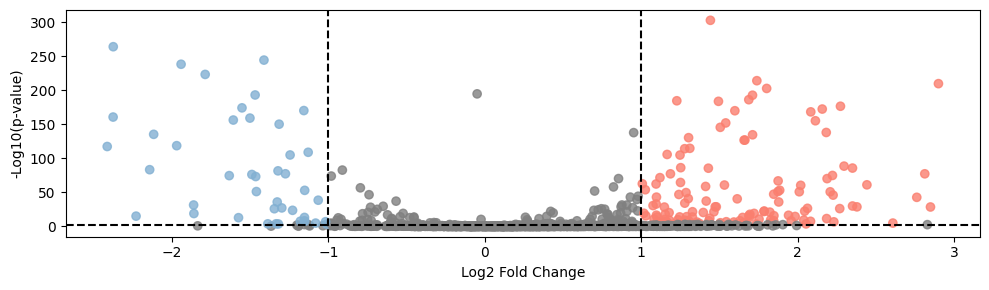
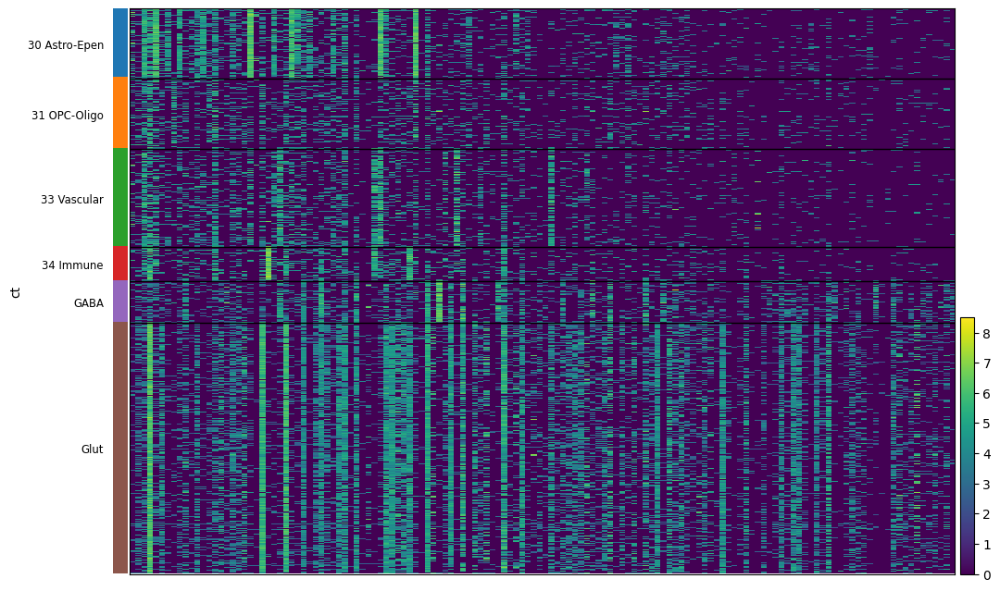
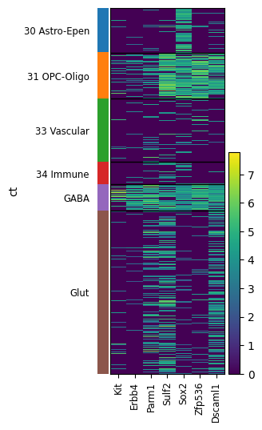
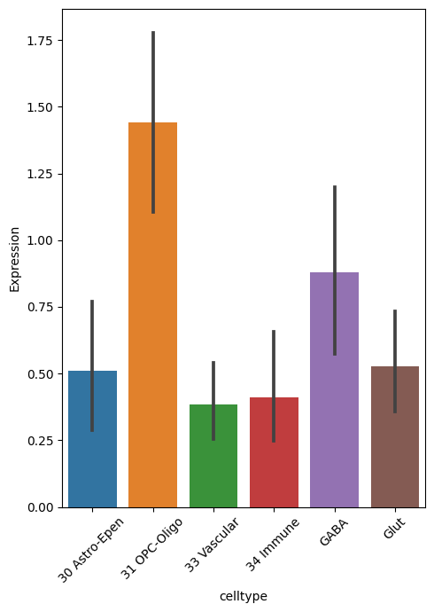
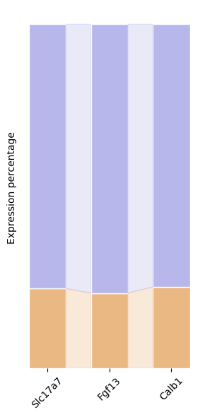
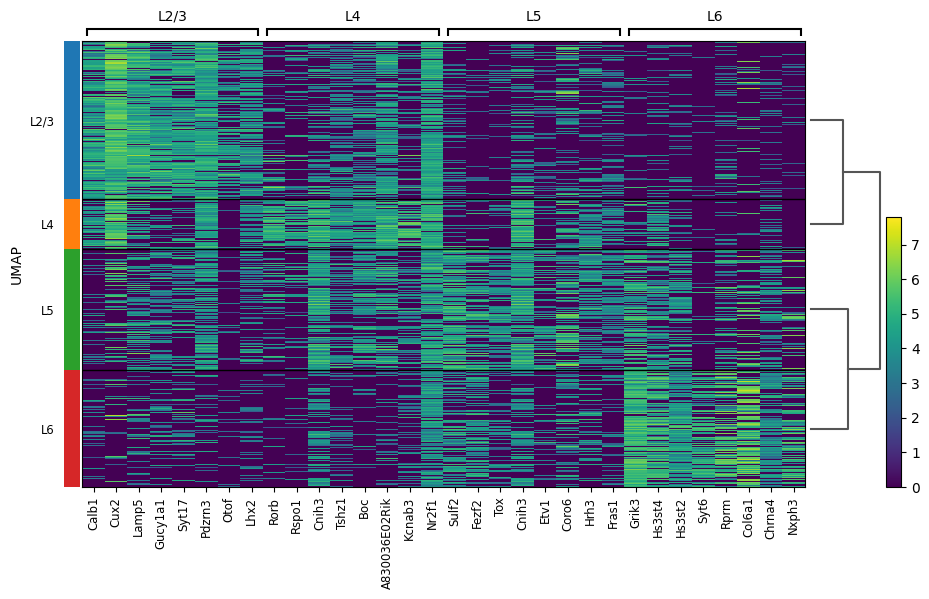
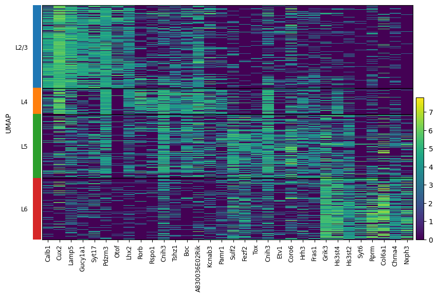
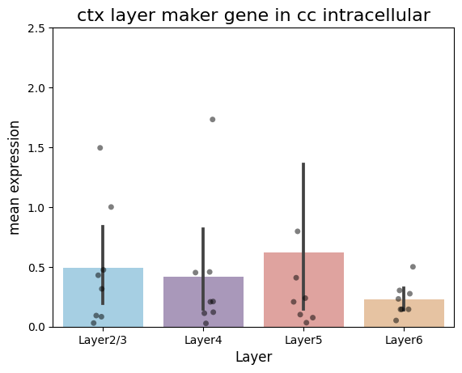

[1]:
import pandas as pd
import scanpy as sc
import matplotlib.pyplot as plt
import anndata as ad
import numpy as np
import warnings
import seaborn as sns
import matplotlib.colors as clr
color_self = clr.LinearSegmentedColormap.from_list('pink_green', ['#3AB370',"#EAE7CC","#FD1593"], N=256)
import matplotlib as mpl
mpl.rcParams['pdf.fonttype'] = 42
mpl.rcParams['ps.fonttype'] = 42
warnings.filterwarnings('ignore')
[2]:
adata_in = sc.read_h5ad('/mnt/Data16Tc/home/haichao/code/SpaCon/Data/N_20231213_zxw/mouse_3/adata_processed.h5ad')
allen_region = pd.read_csv('/mnt/Data16Tc/home/haichao/code/SpaCon/Data/N_20231213_zxw/mouse_3/allen_region.csv')
adata_in.obs['region'] = allen_region['region'].values
meta = pd.read_csv('/mnt/Data16Tc/home/haichao/code/SpaCon/Data/N_20231213_zxw/mouse_3/cell_metadata_with_cluster_annotation.csv')
meta = meta.set_index('cell_label')
meta = meta.loc[adata_in.obs.index.to_list()]
adata_in.obs['cell_type'] = meta['class'].to_list()
adata_out = sc.read_h5ad('/mnt/Data18Td/Data/haichao/merfish_raw_data_zxw3/out_cell_adata/adata_out_cell_distance_q0.3/after_qc/out_cell_adata_qc.h5ad')
# adata_out = sc.read_h5ad('/mnt/Data18Td/Data/haichao/merfish_raw_data_zxw3/out_cell_adata/adata_out_cell_distance_q0.3/after_qc/Zhuang-ABCA-3.001.h5ad')
adata_out.obs['region'] = adata_in.obs.loc[adata_out.obs_names]['region'].values
adata_in.obs
[2]:
| brain_section_label | x | y | z | x_ccf | y_ccf | z_ccf | region | cell_type | |
|---|---|---|---|---|---|---|---|---|---|
| cell_label | |||||||||
| 198904341065180396762707397604803217407 | Zhuang-ABCA-3.023 | 49.206853 | 44.877634 | 12.168155 | 4.920685 | 4.487763 | 1.216815 | SSs1 | 33 Vascular |
| 252199681526991424029643077826220097990 | Zhuang-ABCA-3.023 | 48.973992 | 44.813761 | 12.179006 | 4.897399 | 4.481376 | 1.217901 | SSs1 | 33 Vascular |
| 277720971126854564514249564750701518375 | Zhuang-ABCA-3.023 | 48.791066 | 44.577722 | 12.192707 | 4.879107 | 4.457772 | 1.219271 | SSs1 | 33 Vascular |
| 31551867344111790264292067056219852271 | Zhuang-ABCA-3.023 | 48.830489 | 44.426120 | 12.195078 | 4.883049 | 4.442612 | 1.219508 | SSs1 | 33 Vascular |
| 131102494428104399865219008178262036485 | Zhuang-ABCA-3.023 | 48.308843 | 43.028156 | 12.267879 | 4.830884 | 4.302816 | 1.226788 | SSs1 | 34 Immune |
| ... | ... | ... | ... | ... | ... | ... | ... | ... | ... |
| 318102106429791409781741726367984532777 | Zhuang-ABCA-3.009 | 131.090716 | 69.334275 | 41.436743 | 13.109072 | 6.933427 | 4.143674 | MDRNd | 30 Astro-Epen |
| 35262847161560382172299767067854387528 | Zhuang-ABCA-3.009 | 131.216032 | 69.494070 | 41.351034 | 13.121603 | 6.949407 | 4.135103 | MDRNd | 33 Vascular |
| 75415866509570969932943497000463821106 | Zhuang-ABCA-3.009 | 131.415152 | 70.764504 | 40.800403 | 13.141515 | 7.076450 | 4.080040 | sctd | 24 MY Glut |
| 12350978322417280063239916106423065862 | Zhuang-ABCA-3.009 | 131.646167 | 71.182557 | 40.595995 | 13.164617 | 7.118256 | 4.059599 | sctd | 24 MY Glut |
| 327554758863546024460748891922509519354 | Zhuang-ABCA-3.009 | 131.658892 | 71.414675 | 40.501356 | 13.165889 | 7.141468 | 4.050136 | sctd | 24 MY Glut |
1566842 rows × 9 columns
[3]:
sc.pp.normalize_total(adata_in, target_sum=1e4)
sc.pp.log1p(adata_in)
sc.pp.normalize_total(adata_out, target_sum=1e4)
sc.pp.log1p(adata_out)
[4]:
adata_in.obs['ct'] = adata_in.obs['cell_type']
adata_in.obs.loc[adata_in.obs['cell_type'].str.contains('Glut'), 'ct'] = 'Glut'
adata_in.obs.loc[adata_in.obs['cell_type'].str.contains('GABA'), 'ct'] = 'GABA'
adata_in = adata_in[adata_in.obs['ct'] != '32 OEC']
adata_in.obs['ct'].unique()
[4]:
array(['33 Vascular', '34 Immune', '31 OPC-Oligo', '30 Astro-Epen',
'GABA', 'Glut', '21 MB Dopa', '22 MB-HB Sero'], dtype=object)
[5]:
ctx_43_regions = ['FRP', 'MOp', 'MOs', 'SSp-n', 'SSp-bfd', 'SSp-ll', 'SSp-m', 'SSp-ul', 'SSp-tr', 'SSp-un', 'SSs', 'GU', 'VISC', 'AUDd', 'AUDp', 'AUDpo', 'AUDv', 'VISal', 'VISam', 'VISl', 'VISp', 'VISpl', 'VISpm', 'VISli', 'VISpor', 'ACAd', 'ACAv', 'PL', 'ILA', 'ORBl', 'ORBm', 'ORBvl', 'AId', 'AIp', 'AIv', 'RSPagl', 'RSPd', 'RSPv', 'VISa', 'VISrl', 'TEa', 'PERI', 'ECT']
[6]:
adata_cc_in = adata_in[(adata_in.obs['region'].str.startswith('cc')) & (~adata_in.obs['cell_type'].str.contains('GABA|Glut'))]
adata_cc_in
[6]:
View of AnnData object with n_obs × n_vars = 15599 × 1122
obs: 'brain_section_label', 'x', 'y', 'z', 'x_ccf', 'y_ccf', 'z_ccf', 'region', 'cell_type', 'ct'
uns: 'log1p'
[7]:
adata_ctx = adata_in[adata_in.obs['region'].str.startswith(tuple(ctx_43_regions))]
adata_ctx = adata_ctx[adata_ctx.obs['cell_type'].str.contains('Glut')]
adata_ctx
[7]:
View of AnnData object with n_obs × n_vars = 148119 × 1122
obs: 'brain_section_label', 'x', 'y', 'z', 'x_ccf', 'y_ccf', 'z_ccf', 'region', 'cell_type', 'ct'
uns: 'log1p'
[8]:
adata_cc_out = adata_out[adata_out.obs['region'].str.startswith('cc')]
adata_cc_out
[8]:
View of AnnData object with n_obs × n_vars = 14435 × 1147
obs: 'totalRNA', 'brain_section_label', 'x', 'y', 'z', 'n_genes_by_counts', 'total_counts', 'region'
uns: 'log1p'
obsm: 'spatial'
[9]:
common_cells = adata_cc_in.obs_names.intersection(adata_cc_out.obs_names)
adata_cc_in = adata_cc_in[common_cells]
adata_cc_out = adata_cc_out[common_cells]
[10]:
adata_cc_in.obs['cell_type'].value_counts()
[10]:
31 OPC-Oligo 9402
30 Astro-Epen 2340
33 Vascular 894
34 Immune 526
Name: cell_type, dtype: int64
[11]:
adata_cc_in.obsm['spatial'] = adata_cc_in.obs[['x', 'y']].values
adata_cc_out.obsm['spatial'] = adata_cc_out.obs[['x', 'y']].values
adata_in.obsm['spatial'] = adata_in.obs[['x', 'y']].values
[12]:
adata_ctx.obs['DEG'] = 'ctx_glut_in'
adata_cc_out.obs['DEG'] = 'cc_out'
adata_cc_in.obs['DEG'] = 'cc_in'
adata_ctx_cc = ad.concat([adata_ctx, adata_cc_in, adata_cc_out])
adata_ctx_cc.obs
[12]:
| brain_section_label | x | y | z | region | DEG | |
|---|---|---|---|---|---|---|
| 207252950882079766503645227815929952400 | Zhuang-ABCA-3.023 | 50.597984 | 41.393473 | 12.239274 | SSs2/3 | ctx_glut_in |
| 311894855078226645952213910865897976013 | Zhuang-ABCA-3.023 | 50.420950 | 41.271525 | 12.251970 | SSs1 | ctx_glut_in |
| 125208524519663791324346814779771999476 | Zhuang-ABCA-3.023 | 50.959183 | 43.276307 | 12.158869 | SSs2/3 | ctx_glut_in |
| 12594778395225515056477813574460470379 | Zhuang-ABCA-3.023 | 49.836112 | 42.209685 | 12.238386 | SSs1 | ctx_glut_in |
| 148621603142722639702356861951538418099 | Zhuang-ABCA-3.023 | 51.023440 | 42.722536 | 12.174236 | SSs2/3 | ctx_glut_in |
| ... | ... | ... | ... | ... | ... | ... |
| 79089257071572594359780469736093814949 | Zhuang-ABCA-3.009 | 74.951639 | 13.604024 | 38.481071 | ccs | cc_out |
| 92146094126984864052663841225116312773 | Zhuang-ABCA-3.009 | 75.154326 | 14.108468 | 38.486841 | ccs | cc_out |
| 93045082915409019668907757310610222929 | Zhuang-ABCA-3.009 | 73.220268 | 13.598299 | 38.481447 | ccs | cc_out |
| 95615023825791199971975610754292794950 | Zhuang-ABCA-3.009 | 74.127226 | 13.866381 | 38.486890 | ccs | cc_out |
| 204077232911649662213478306036479568155 | Zhuang-ABCA-3.009 | 75.364054 | 13.718454 | 38.480330 | ccs | cc_out |
174443 rows × 6 columns
[13]:
sc.tl.rank_genes_groups(adata_ctx_cc, 'DEG', groups=['ctx_glut_in'], reference='cc_in', method='wilcoxon')
a_vs_c = sc.get.rank_genes_groups_df(adata_ctx_cc, group='ctx_glut_in')
sc.tl.rank_genes_groups(adata_ctx_cc, 'DEG', groups=['cc_out'], reference='cc_in', method='wilcoxon')
b_vs_c = sc.get.rank_genes_groups_df(adata_ctx_cc, group='cc_out')
# Find out the gene of expressing closer to A in B
similar_genes = []
for gene in b_vs_c['names']:
if gene in a_vs_c['names'].values:
a_logfc = a_vs_c[a_vs_c['names'] == gene]['logfoldchanges'].values[0]
b_logfc = b_vs_c[b_vs_c['names'] == gene]['logfoldchanges'].values[0]
# if np.sign(a_logfc) == np.sign(b_logfc) and abs(a_logfc - b_logfc) < 0.4 and a_logfc>2 and b_logfc>2:
if np.sign(a_logfc) == np.sign(b_logfc) and a_logfc > 2 and b_logfc > 2:
similar_genes.append(gene)
print(f"similar_genes: {len(similar_genes)}")
print(similar_genes)
B中与A更相似的基因: 26
['Slc17a7', 'Ppp1r1b', 'Stac2', 'Syt17', 'Ccnd2', 'Hs3st4', 'Sv2b', 'Fgf13', 'Caln1', 'Kcnh3', 'Neurod2', 'Pde1a', 'Nxph3', 'Vgf', 'Scn4b', 'Kcnj4', 'Bcl11b', 'Oprm1', 'Gpr88', 'Hrh3', 'Egr3', 'Doc2b', '4930452B06Rik', 'Ankrd63', 'Actn2', 'Cckar']
[15]:
def plot_volcano(df, title, highlight_genes=None):
plt.figure(figsize=(10, 3))
# -log10(p-value)
df['log_pval'] = -np.log10(df['pvals'])
# Set point color
colors = np.where((df['logfoldchanges'] > 1)&(df['log_pval'] > 3), '#fa7f6f',
np.where((df['logfoldchanges'] < -1)&(df['log_pval'] > 3), '#82b0d2', 'grey'))
# Draw all points
plt.scatter(df['logfoldchanges'], df['log_pval'], c=colors, alpha=0.8)
# If you provide a list of highlighting genes, draw these genes
if highlight_genes:
highlight_df = df[df['names'].isin(highlight_genes)]
plt.scatter(highlight_df['logfoldchanges'], highlight_df['log_pval'], color='red')
# Add tags to highlight points
for _, row in highlight_df.iterrows():
plt.annotate(row['names'], (row['logfoldchanges'], row['log_pval']))
plt.xlabel('Log2 Fold Change')
plt.ylabel('-Log10(p-value)')
# plt.title(title)
# Add threshold line
plt.axhline(y=-np.log10(0.005), color='black', linestyle='--')
plt.axvline(x=1, color='black', linestyle='--')
plt.axvline(x=-1, color='black', linestyle='--')
# plt.show()
plt.tight_layout()
# plt.savefig('./in_out_compare/cc_in_out_deg.pdf', format='pdf')
# Use function
plot_volcano(b_vs_c, 'B vs C Differential Expression', highlight_genes=None)

[16]:
# adata_ctx = adata_in[adata_in.obs['region'].str.startswith(tuple(ctx_43_regions))]
adata_ctx = adata_in[(adata_in.obs['region'].str.startswith('cc')) | (adata_in.obs['region'].str.startswith(tuple(ctx_43_regions)))]
# plt.figure(figsize=(10,6))
sc.pl.heatmap(adata_ctx, b_vs_c[(b_vs_c['logfoldchanges'] >1)&(b_vs_c['log_pval'] > 3)]['names'].tolist(),'ct',var_group_rotation=True, figsize=(12, 8), show=False)
# plt.savefig('./in_out_compare/down_gene_heatmap.png', dpi=500, bbox_inches='tight')
WARNING: Gene labels are not shown when more than 50 genes are visualized. To show gene labels set `show_gene_labels=True`
[16]:
{'heatmap_ax': <AxesSubplot:>, 'groupby_ax': <AxesSubplot:ylabel='ct'>}

[21]:
sc.pl.heatmap(adata_ctx, ['Kit','Erbb4', 'Parm1', 'Sulf2', 'Sox2', 'Zfp536', 'Dscaml1'],'ct',var_group_rotation=True, show=False)
plt.tight_layout()
# plt.savefig('./in_out_compare/gaba_oligo_maker.png', dpi=500, bbox_inches='tight')

[23]:
gene_exp = adata_ctx[:, b_vs_c[(b_vs_c['logfoldchanges'] <-1)&(b_vs_c['log_pval'] > 3)]['names'].tolist()].to_df()
gene_exp['celltype'] = adata_ctx.obs['ct']
gene_mean = gene_exp.groupby('celltype').mean()
df_long = gene_mean.reset_index().melt(id_vars='celltype', var_name='Gene', value_name='Expression')
plt.figure(figsize=(5, 7))
sns.barplot(x='celltype', y='Expression', data=df_long)
# sns.swarmplot(x='celltype', y='Expression', data=df_long)
# plt.xlabel('Row Index')
# plt.ylabel('Expression Level')
# plt.title('Violin Plots for Each Row')
plt.xticks(rotation=45)
# plt.show()
plt.tight_layout()
# plt.legend()
# plt.savefig('./in_out_compare/cc_in_out_deg_down_gene_in_ctx.pdf', format='pdf')

gene exp plot
[120]:
gene = ['Slc17a7', 'Fgf13', 'Calb1']
df = pd.DataFrame(index=['in_cc', 'out'], columns=gene, dtype=float)
for g in gene:
# in_cell_ctx = adata_ctx[:, g].X.mean()
in_cell_cc = adata_cc_in[:, g].X.mean()
out_cell = adata_cc_out[:, g].X.mean()
all = in_cell_cc + out_cell
df.loc['in_cc', g] = in_cell_cc / all
# df.loc['in_ctx', g] = in_cell_ctx / all
df.loc['out', g] = out_cell / all
# Set data
categories = gene
colors = ['#eab883', '#b7b7eb']
data = df.values
# Create a chart
fig, ax = plt.subplots(figsize=(3, 6))
# Draw a stack of stacks
x = np.arange(len(categories))
bottom = np.zeros(len(categories))
width=0.6
for i, row in enumerate(data):
ax.bar(x, row, bottom=bottom, color=colors[i], edgecolor='white',width=width)
# Add percentage tags above each part
# for j in range(len(categories)):
# percent = row[j] * 100 # Convert the percentage to the percentage system
# ax.text(x[j], bottom[j] + row[j] / 2, f'{percent:.1f}%',
# ha='center', va='center', color='black', fontsize=10, rotation=90)
bottom += row
# Add full -coverage ribbon
for j in range(len(categories) - 1):
left = x[j]+width/2
right = x[j+1]-width/2
left_data = data[:, j]
right_data = data[:, j+1]
left_cumsum = np.cumsum(left_data)
right_cumsum = np.cumsum(right_data)
# Add all ribbons from the bottom to the top
for i in range(len(colors)):
left_bottom = left_cumsum[i-1] if i > 0 else 0
left_top = left_cumsum[i]
right_bottom = right_cumsum[i-1] if i > 0 else 0
right_top = right_cumsum[i]
ax.fill([left, right, right, left],
[left_bottom, right_bottom, right_top, left_top],
color=colors[i], alpha=0.3)
# Set chart style
# ax.set_title('Full Coverage Ribbon Stacked Bar Chart')
# ax.set_xlabel('Categories')
ax.set_ylabel('Expression percentage')
plt.xticks(x, rotation=45)
ax.set_xticklabels(categories)
ax.set_yticklabels([])
ax.set_yticks([])
# Remove the coordinate shaft border
for spine in ax.spines.values():
spine.set_visible(False)
# Display chart
plt.tight_layout()
# plt.savefig('./in_out_compare/in_out_exp.pdf', format='pdf')

ctx layer maker gene in cc
[87]:
# adata_ctx.obs['layer'] = adata_ctx.obs['DEG'].astype(str)
adata_ctx = adata_in[adata_in.obs['region'].str.startswith(tuple(ctx_43_regions))]
adata_ctx = adata_ctx[adata_ctx.obs['cell_type'].str.contains('Glut')]
adata_ctx = adata_ctx[:,adata_ctx_cc.var_names]
adata_ctx.obs['layer'] = None
adata_ctx.obs.loc[adata_ctx.obs['region'].str.contains('1'), 'layer'] = 'L1'
adata_ctx.obs.loc[adata_ctx.obs['region'].str.contains('2/3'), 'layer'] = 'L2/3'
adata_ctx.obs.loc[adata_ctx.obs['region'].str.contains('4'), 'layer'] = 'L4'
adata_ctx.obs.loc[adata_ctx.obs['region'].str.contains('5'), 'layer'] = 'L5'
adata_ctx.obs.loc[adata_ctx.obs['region'].str.contains('6'), 'layer'] = 'L6'
# adata.obs.loc[adata.obs['region'].isin(['LP', 'LD']), 'layer'] = 'th'
# adata.obs.loc[adata.obs['region'].str.contains('VISp'), 'layer'] = 'VISp'
# adata_ctx_cc.uns['layer_colors'] = ["#FF420E", "#FFBB00", "#4CB5F5", "#89DA59", "#878787", "#B037C4", '#8C6D31']
adata_ctx = adata_ctx[adata_ctx.obs['layer'] != 'L1']
# adata_ctx = adata_ctx[adata_ctx.obs['layer'] is not None]
[90]:
sc.tl.rank_genes_groups(adata_ctx, 'layer', method='wilcoxon')
sc.pl.rank_genes_groups_heatmap(adata_ctx, n_genes=8, show=False)
plt.tight_layout()
plt.savefig('./in_out_compare/ctx_maker.png', dpi=400, bbox_inches='tight')
WARNING: dendrogram data not found (using key=dendrogram_UMAP). Running `sc.tl.dendrogram` with default parameters. For fine tuning it is recommended to run `sc.tl.dendrogram` independently.
WARNING: You’re trying to run this on 1111 dimensions of `.X`, if you really want this, set `use_rep='X'`.
Falling back to preprocessing with `sc.pp.pca` and default params.

[95]:
l23 = ['Calb1', 'Cux2', 'Lamp5', 'Gucy1a1', 'Syt17', 'Pdzrn3', 'Otof', 'Lhx2']
l4 = ['Rorb', 'Rspo1', 'Cnih3', 'Tshz1', 'Boc', 'A830036E02Rik', 'Kcnab3', 'Pamr1']
l5 = ['Sulf2', 'Fezf2', 'Tox', 'Cnih3', 'Etv1', 'Coro6', 'Hrh3', 'Fras1']
l6 = ['Grik3', 'Hs3st4', 'Hs3st2', 'Syt6', 'Rprm', 'Col6a1', 'Chrna4', 'Nxph3']
sc.pl.heatmap(
adata_ctx,
var_names=l23 + l4 + l5 + l6,
groupby='layer',
# cmap='plasma',
swap_axes=False,
# dendrogram=True
show=False
)
# plt.savefig('./in_out_compare/ctx_maker.png', dpi=400, bbox_inches='tight')

[ ]:
out_exp_mean = []
in_exp_mean = []
for g, layer in zip([l23, l4, l5, l6], ['23', '4', '5', '6']):
out_exp = adata_cc_out[:, g].to_df().mean()
in_exp = adata_cc_in[:, g].to_df().mean()
out_p = out_exp/(in_exp + out_exp)
in_p = in_exp/(in_exp + out_exp)
out_exp_mean.append(out_exp.values)
in_exp_mean.append(in_exp.values)
categories = in_exp.index
values1 = in_p.values
values2 = out_p.values
width = 0.6
fig, ax = plt.subplots(figsize=(8,5))
ax.bar(categories, values1, width, label='in', color='#6bad6b')
ax.bar(categories, values2, width, bottom=values1, label='out', color='#e56f5e')
ax.bar([len(categories)], [in_p.values.mean()], width=1, color='#6bad6b')
ax.bar([len(categories)], [out_p.values.mean()], width=1, bottom=in_p.values.mean(), color='#e56f5e')
ax.text(len(categories), in_p.values.mean()/2, f'{in_p.values.mean():.2f}',
ha='center', va='center', color='black', fontweight='bold')
ax.text(len(categories), out_p.values.mean()/2+in_p.values.mean(), f'{out_p.values.mean():.2f}',
ha='center', va='center', color='black', fontweight='bold')
ax.axhline(y=0.5, color='black', linestyle='--', linewidth=2, alpha=0.5)
ax.set_ylabel('Expression Proportion')
ax.set_xlabel('Gene')
all_categories = list(categories) + ['average']
ax.set_xticks(range(len(all_categories)))
ax.set_xticklabels(all_categories, rotation=0)
ax.set_title(f'Layer{layer}')
ax.legend( bbox_to_anchor=(1, 1), loc='upper left')
plt.show()
plt.close()
[92]:
df = pd.DataFrame({
'Layer2/3': in_exp_mean[0],
'Layer4': in_exp_mean[1],
'Layer5': in_exp_mean[2],
'Layer6': in_exp_mean[3]
})
# Convert the data box to a long format
df_long = df.melt(var_name='Group', value_name='Value')
# Set graphic style and size
# plt.figure(figsize=(12, 6))
colors = ['#9cd2ed', '#a992c0', '#ea9994', '#f2c396']
sns.barplot(x='Group', y='Value', data=df_long, palette=colors)
sns.stripplot(x='Group', y='Value', data=df_long, color='black', alpha=0.5)
# Set the title and label
plt.title('ctx layer maker gene in cc intracellular', fontsize=16)
plt.xlabel('Layer', fontsize=12)
plt.ylabel('mean expression', fontsize=12)
plt.ylim(0, 2.5)
plt.savefig('./in_out_compare/layer_cc_in.pdf', format='pdf')

[93]:
df = pd.DataFrame({
'Layer2/3': out_exp_mean[0],
'Layer4': out_exp_mean[1],
'Layer5': out_exp_mean[2],
'Layer6': out_exp_mean[3]
})
# Convert the data box to a long format
df_long2 = df.melt(var_name='Group', value_name='Value')
# Set graphic style and size
# plt.figure(figsize=(4, 6))
colors = ['#9cd2ed', '#a992c0', '#ea9994', '#f2c396']
sns.barplot(x='Group', y='Value', data=df_long2, palette=colors)
sns.stripplot(x='Group', y='Value', data=df_long2, color='black', alpha=0.5)
# Set the title and label
plt.title('ctx layer maker gene in cc extracellular', fontsize=16)
plt.xlabel('Layer', fontsize=12)
plt.ylabel('mean expression', fontsize=12)
plt.ylim(0, 2.5)
plt.savefig('./in_out_compare/layer_cc_out.pdf', format='pdf')